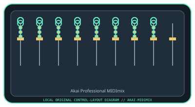

[ SPECIALIZED INPUT CONTROLLERS // IDENTIFIED COMPONENT ]
Akai Professional MIDImix
USB MIDI mixer surface with eight channel strips, a master strip, and DAW preset recall.

MODEL IDENTIFICATION: MIDImix. Confirm the full label, revision, region, included accessories, and software generation against the physical unit before use.
Model specifications
| Catalog leaf | Specialized input controllers |
|---|---|
| Exact model / identifier | MIDImix |
| Control inputs / sensors | Eight channel strips, each with one fader, three rotary knobs, and three mute/solo/record buttons; one master fader and master knob; bank and send controls. Rotary knobs and faders are continuous controls; buttons are discrete switches. |
| Connection / protocol | USB Type-B, bus-powered USB MIDI; no audio input/output. The factory 1:1 mapping and custom MIDI messages are delivered through USB. |
| Driver, software, and host compatibility | Works with MIDI-mappable DAWs; Akai MIDImix Editor supports custom mapping/presets. Akai lists Windows and macOS support; specific DAW and OS versions should be checked against current software downloads. It is a controller, not a sound generator. |
| Setup / calibration | Connect USB and choose MIDImix as the DAW MIDI input; enable its control surface or map controls manually. If using custom mappings, save/transfer the preset with MIDImix Editor and verify channel/knob assignments. No calibration is specified; confirm fader endpoints and knob values in the DAW. |
Safety and preservation
Do not force faders past their travel or rotate knobs against their stops. Keep dust and liquids out of the controls; unplug before cleaning, and avoid tension on the USB cable.
Record observed condition, host OS, application/driver version, firmware, accessories, and test conditions separately from manufacturer claims.
Primary manufacturer sources
- Akai Professional MIDImix product pageManufacturer specifications and bundled software information.
- Akai Professional MIDImix user manualManufacturer-hosted MIDImix manual; confirm the hardware label and current software release.
Specifications and software support can change by revision and host OS. Verify the exact unit and applicable manual before service or deployment.